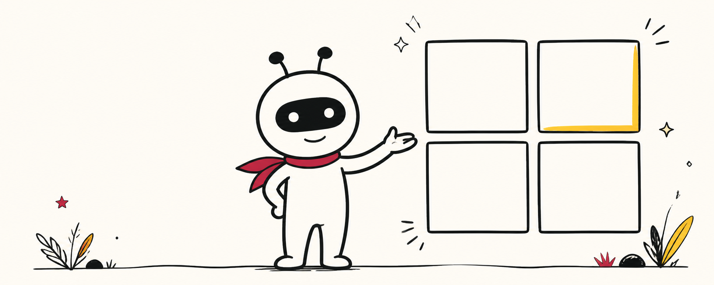
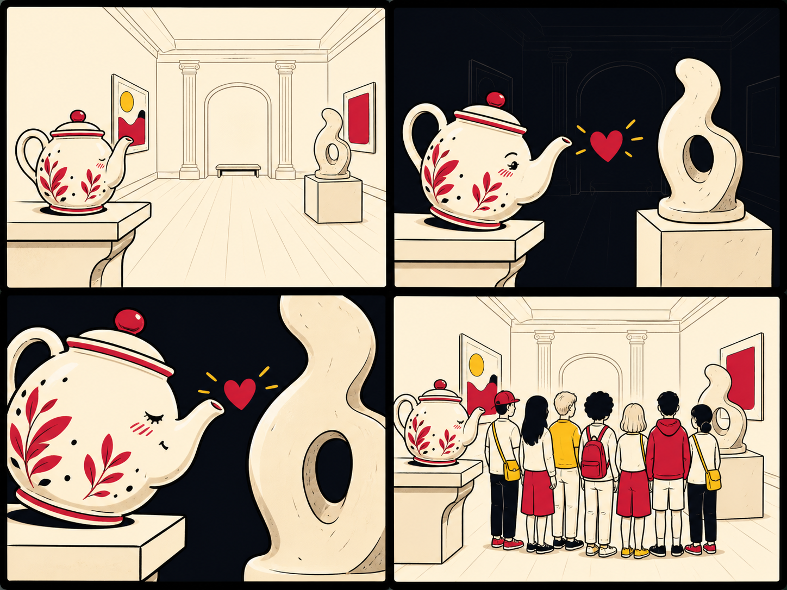

Project overview
The Brief
What are you making, and what does finished look like?
The project
Four pictures, no character dialogue, one joke. You won’t draw a thing — you’ll hunt down photos you’re allowed to use and arrange them so a story reads left to right, top to bottom.
Your studio kit
Everything you need is on these pages: a story starter, picture bank, Comic Builder and the final submission space. Short captions and credit lines help the reader; they are not character dialogue.

What finished looks like
- Four picturessquare and in a clear order
- Four captionsone short line under each frame
- Four creditsone for every image you use
What you’re making
Four photos, no drawing, one joke on frame four. Roll for your idea, plan it, build it in the Comic Builder, post it.
Why four frames?
- Set it upShow us who, where, and what’s normal.
- Make it worseSomething changes. Get the camera closer.
- Make it worse againCloser still. Now we’re worried.
- Land the punchlineNot what we expected. If it needs explaining, it isn’t the punchline yet.
The five phases
Five pages, in order. Each one has a thing to read or watch, and a thing to do.
5 Evaluating
Share
Post your finished comic to the Final submission Padlet, then comment on two others.
Your three hands-on activities
Three of these pages hand you something to make — one for each stage of the design process:
- Panel Scramble (1 Look) — sort real panels by shot type. Investigating
- The Roll (2 Roll) — roll your story, then post it to the class wall. Designing
- The Comic Builder (4 Build) — build your four frames, add short captions, export your comic. Producing
The picture bank, the licence sort and the AI helpers are extra support — handy, but not the main three.
The schedule
| Week | What happens | Page |
|---|---|---|
| Week 1 | Sort panels by shot type. | 1 Look |
| Week 2 | Roll and post your brief. | 2 Roll |
| Week 3 | Plan the four frames. | 3 Plan |
| Week 4 | Find images, check licence, start building. | 4 Build |
| Week 5 | Finish, caption, credit, export. | 4 Build |
| Week 6 | Build the checklist, post, comment on two. | 5 Share |
Missed a lesson? Every page above works on its own. Start at the top of the page for that week and follow it through.
What “finished” means
Make a readable four-frame strip, then download and submit that exact file.
A quick Comic Builder check
- Square, four frames, in order.
- Caption under each frame.
- Credit line for every image.
How you hand it in
- 1 Download your comic from the Comic Builder.
- 2 Open 5 Share. The Final submission Padlet unlocks after your download.
- 3 Post the image and credit lines before the bell — the laptop wipes itself.

- Frame 1A teapot waits on a gallery shelf.
- Frame 2The gallery goes dark.
- Frame 3The sculpture seems much closer.
- Frame 4The lights reveal a tour group between them.